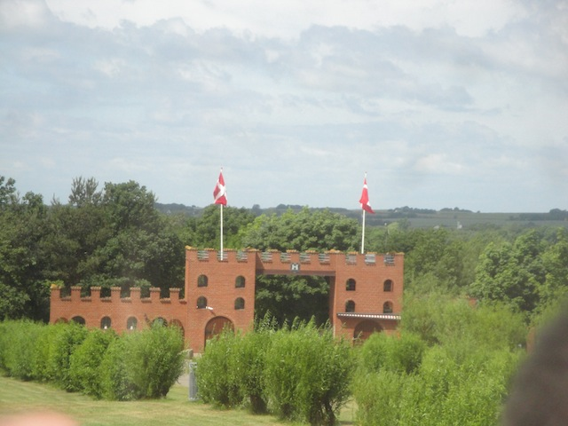
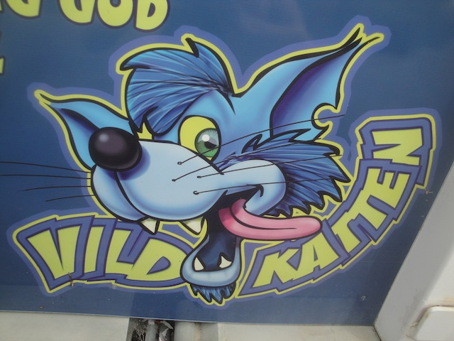
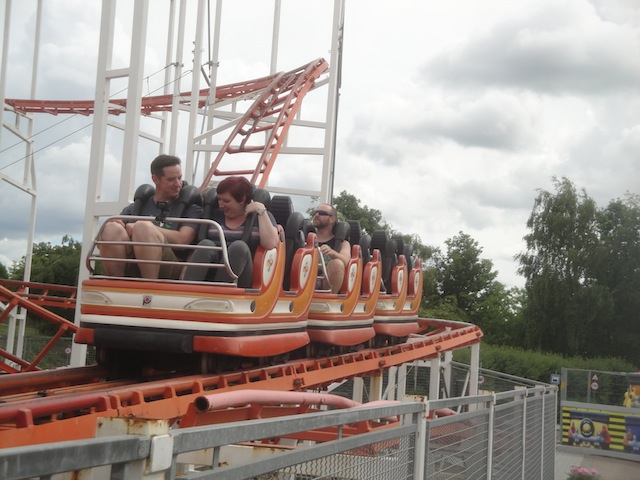
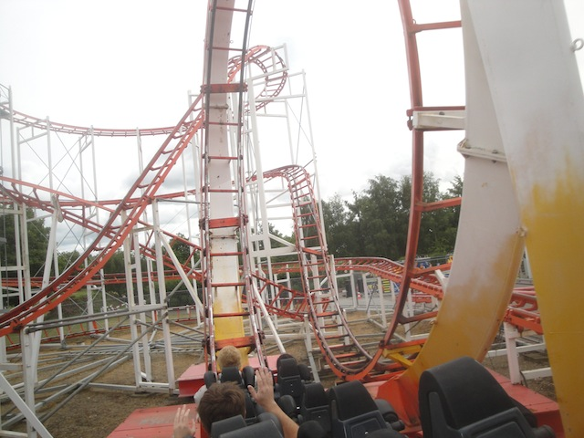
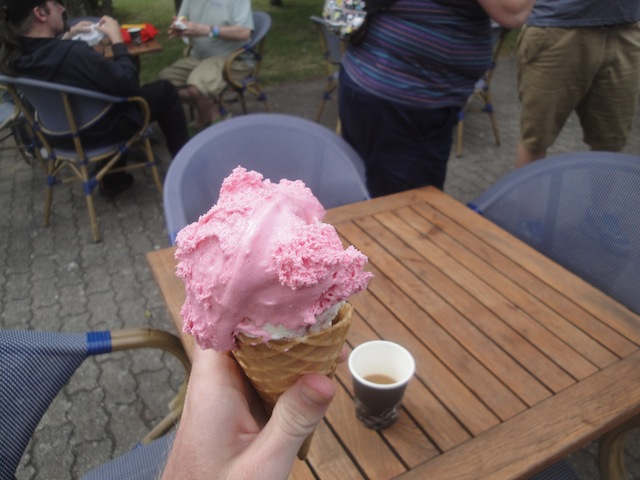
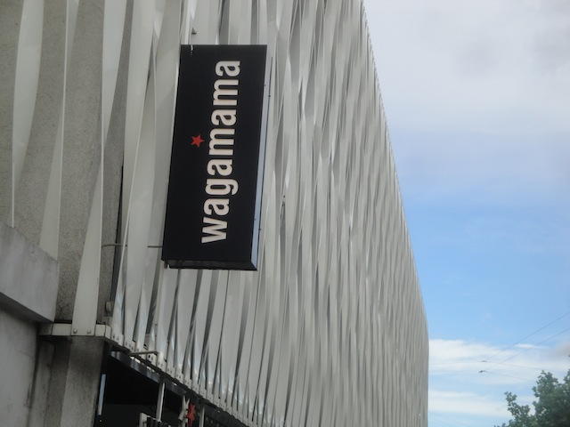

| |
TPR's Scandinavia Trip
Copenhagen
Sommerland Sjaelland
Bakken
Tivoli Gardens Bon Bon Land Hansa Park Legoland Billund Djurs Sommerland
Tivoli Friheden Farup Sommerland Tusenfryd Liseberg Skara Sommerland Grona Lund Power Park Sarkanemmi Linnemaki
Well, we had fun in Copenhagen. Now it's time for the amusement parks to roll in. Oh, and the breakfast at the hotel was awesome. That Danish was simply unbelievably good. =)
I love windmills. Not only because they're a great source of clean energy, but they just look beautiful. Those who bitch about how they're a source of eye pollution are most likely corrupt oil lobbyists.

Yay!!! We made it to Sommerland Sjaelland!!! =)
Today was bonus park day. So a bunch of us decided to head on over to Sommerland Sjaelland for some bonus credits and we just ended up having an absolute blast.
Hey Nolan!! Now you can get that Coke you so desperately wanted.
Oops. Never mind. Guess you'll just have to wait till lunch. =)
First things first, lets check out their Driving School.
Hey Nicole!! We found a ride just for you!!
 All right. First credit of the trip.
All right. First credit of the trip.
Oh boy!!! Another Wacky Worm!! I'm so pleased to be riding this one of a kind ride!!
Every single one of you guys is sad and pathetic.
Wee!!! Self-Operated Zipline!!!
Who cares if the train is moving? Hop on board and lets go!!
Hope you like all these American themed areas. There's gonna be A LOT of them on this trip.
Hey, if you're pathetic enough to ride our Wacky Worm, then surely you're pathetic to ride our horse ride. Hop aboard.
♫ "I'm riding a horse. Riding a horse with my high heels on." ♫
If you need help tying your cigarette in a knot, please contact an attendent for assistance.
 Love the lunch you put on for us Sommerland Sjaelland.
Love the lunch you put on for us Sommerland Sjaelland.
Please look away from the food and direct your attention here for a history lesson on Sommerland Sjaelland.
NO!!!! MR. T!!!!!! ='(
Ooh. Love the look of that water slide.
 Just drinking my beer before driving the go karts. What? Do you have a problem with that? =)
Just drinking my beer before driving the go karts. What? Do you have a problem with that? =)
Just in case you forgot where we are.
Hey Disney. Call your lawyers cause we're riding the politically incorrect Jungle Cruise knock off. =)
Release the King Kong.
You know that waterfall gag gets old really fast.
Where can I apply for this job?

Time to get the other credit at this park.
 Oh crap. Time to pop my Pinfari Looper cherry.
Oh crap. Time to pop my Pinfari Looper cherry.
Ugh. Sign of true quality. I'm gonna need another beer to get through this.

The most shocking part of all this? I actually liked the ride!!

It was relatively smooth and there actually was a good pop of airtime. It was just a fun little ride.
 Hi random spinning flat ride. Hows it going?
Hi random spinning flat ride. Hows it going?

Whatever the hell that pink goop you Danes keep putting on your ice cream, keep doing that cause it kicks ass!! =)
Pathetic fools who think this'll help them for tomorrows rope course.
Sad to report that the guy in the photo landed on his head. Our deepest sympathies from Incrediblecoasters.
Dude!!! These bouncing pillows are awesome!!! For some reason, they're just much better than normal trampolines, which made me very happy to learn after this trip that there's actually one in SoCal apparently.

After that fun day at Sommerland Sjaelland, we went back to Copenhagen for dinner at a chain resteraunt that for some reason isn't popular in America, Wagamamas.
It's not my all time favorite chain or anything, but I really liked it. I could totally see this resteraunt thriving in several different shopping centers, particuarlly in Orange County.
Mmm. Creme Brule *drool*.
And to top off this awesome day, we had the 2nd ever Snack & Alcohol Exchange. And after just how crazy the last alcohol exchange was, I was really looking foreword to tonight.
I didn't even eat anything from the Snack Exchange. Oh, don't get me wrong. I took plenty, I just shoved it all inside a brown paper bag and snacked on it throughout the entire trip. It was kind of like grown up trick or treating.
That red stuff right there, SO F*CKING GOOD!!! I had at least three shots of that.
Grr. I'm torn between my love for all things apple flavored and my hatred of moonshine.
Bah!! Screw it!! Gimme the whole bottle *chug chug chug*!!!
The blue stuff was also really good. Thumbs up from me.
"Need more booze!!! We need more booze!!!"
Bakken
Home
|